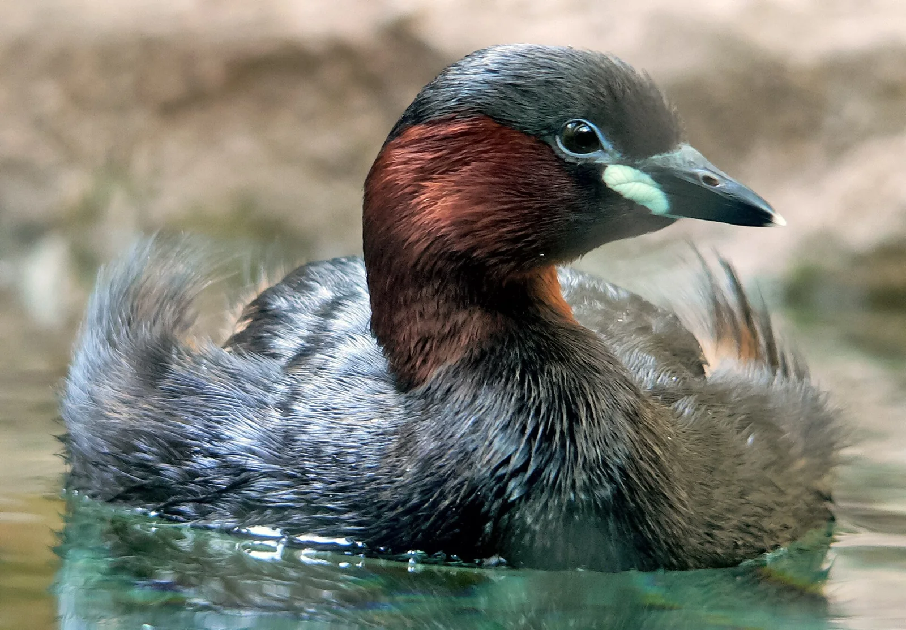

返回名录NO. 032 · 湿地与河涌 / 鸊鷉科 · Podicipedidae
小鸊鷉
xiǎo pì tī Tachybaptus ruficollis水面上的小葫芦，一受惊就潜得无影无踪
圆滚滚、短尾巴，漂在水面上像个毛茸茸的小葫芦。繁殖期脸颊和脖子变成浓郁的栗红色，嘴角一点黄——那是它最漂亮的样子。危险一来，它「噗」地一下潜水，从几米外重新冒头。
图集 Plates & Photographs
一张科学绘图（博物画）用于对照形态与色块，两张野外摄影记录它在真实光线里的样子。点击任意一张可放大。
辨识特征 Identification
- 繁殖羽头、颈、前胸栗红色，嘴角有一块鲜明的淡黄色斑，眼黄色，整体暖色调。
- 非繁殖羽上体暗褐，下体淡黄褐，颈侧偏白，颜色朴素，但圆润体型与「无尾」轮廓不变。
- 体形体型小而圆，尾极短几乎看不见，颈短，喙尖细如锥。
- 脚腿位于身体极后部，趾具瓣蹼，适合潜水但走路笨拙，几乎不上岸。
习性 Behaviour
终生水栖，极少上岸。潜水捕食小鱼、虾、水生昆虫，每次潜水 10–30 秒。受惊时常常只把头沉入水中「隐身」，或直接潜走。繁殖期在水草间筑浮巢，可随水位升降；亲鸟常把幼鸟背在背上游泳。
鸣声 Voice
野外鸣声录音
点击波形可跳转 · 建议佩戴耳机
0:00 / 0:22
录音 iNaturalist 用户 christoph_moning · 许可 CC BY
· 原始文件
繁殖期发出连续颤音「bibibi—bibibi」，节奏快速、带颤，像小球在桌上弹跳；也有单声的「bee」哨音。是判断它存在的可靠线索。
在珠海去哪里找 Where to Watch
- 香山湖公园
- 乾务水库
- 各公园湖面
- 斗门鱼塘
观察提示
看到水面上一个「没有尾巴的小褐球」，别急着找鸭子——观察它是否潜水。若能持续潜水数十秒再从远处冒出，就是小鸊鷉。